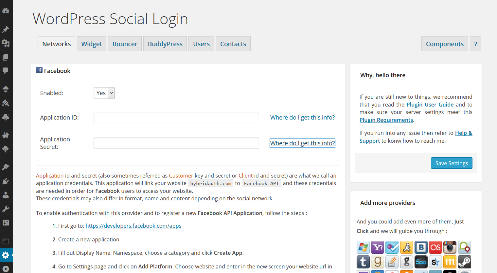

Social Networks Setup
Important:
Social Networks Setup is the most important step in order for WordPress Social Login to properly work.
Except few, most of the social networks supported by WSL will require that you create an external application linking your website to theirs apis. These external applications ensures that users are logging into the proper [your] website, and it also allows identities providers to send the users back to the correct [your] website after they successfully authenticate with their accounts.
Goto WordPress Social Login > Networks tab to setup the social networks you want to use and follow carefully the described steps.
- To allow your users to use a given provider, you should set Enabled to YES.
- If a provider requires an Application ID, key and secret then click on Where do I get this info? [to know how to].
- To enable russian, cyrillic or arabic usernames, you might need WordPress Special Characters in Usernames plugin.
- Some social networks like Twitter and LinkedIn do NOT provide their user's email address and by default a random email will then be generated for them instead. To change this behaviour and to force new registered users to provide their emails before they get in, goto Bouncer and enable Profile Completion.
- WSL will try to link existing wordpress accounts to the social network users profiles by matching their verified emails.
